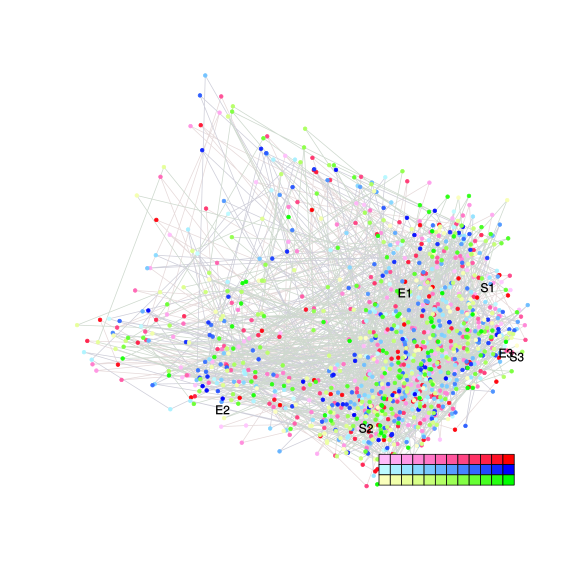
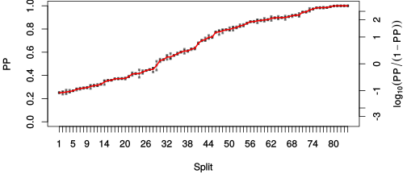
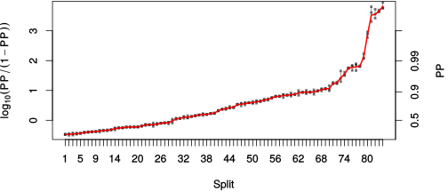

| chain # | burnin | subsample | Iterations (remaining) | command line | subdirectory | directory |
|---|---|---|---|---|---|---|
| 1 | 10000 | 1 | 90000 | /usr/local/bali-phy-3.0-beta2/bin/bali-phy E5_red-blue-yellow_clade_aa.fas -s 62327 -S LG -n E5_red-blue-yellow_aa | E5_red-blue-yellow_aa-1 | /home/willemse/data/trees/BaliPhy/all_E5_aa |
| 2 | 10000 | 1 | 90000 | /usr/local/bali-phy-3.0-beta2/bin/bali-phy E5_red-blue-yellow_clade_aa.fas -s 93324 -S LG -n E5_red-blue-yellow_aa | E5_red-blue-yellow_aa-2 | /home/willemse/data/trees/BaliPhy/all_E5_aa |
| 3 | 10000 | 1 | 90000 | /usr/local/bali-phy-3.0-beta2/bin/bali-phy E5_red-blue-yellow_clade_aa.fas -s 52345 -S LG -n E5_red-blue-yellow_aa | E5_red-blue-yellow_aa-3 | /home/willemse/data/trees/BaliPhy/all_E5_aa |
| P(data|M) = -7588.316 +- 0.494 | Complete sample: 270003 topologies | 95% Bayesian credible interval: 256503 topologies |
Phylogeny Distribution

| Partition support: Summary |
| Partition support graph: SVG |
{kind=link}
| 50% consensus | Newick (+PP) | SVG | |||||
| 66% consensus | Newick (+PP) | SVG | |||||
| 80% consensus | Newick (+PP) | SVG | |||||
| 90% consensus | Newick (+PP) | SVG | |||||
| 95% consensus | Newick (+PP) | SVG | |||||
| 99% consensus | Newick (+PP) | SVG | |||||
| 100% consensus | Newick (+PP) | SVG | |||||
| MAP | Newick (+PP) | SVG | |||||
| greedy | Newick (+PP) | SVG |
{kind=link}
{kind=link}
{kind=link}
{kind=link}
{kind=link}
{kind=link}
{kind=link}
{kind=link}
Alignment Distribution
Partition 1
| Diff | Min. %identity | # Sites | Constant | Informative | ||||
|---|---|---|---|---|---|---|---|---|
| Initial | FASTA | HTML | Diff | 0.735% | 165 | 1 (0.606%) | 162 (98.2%) | |
| Best (WPD) | FASTA | HTML | AU | 0% | 402 | 0 (0%) | 326 (81.1%) |
Mixing
{kind=link}
{kind=link}
| burnin (scalar) | ESS (scalar) | ESS (partition) | ASDSF | MSDSF | PSRF-CI80% | PSRF-RCF |
|---|---|---|---|---|---|---|
| 858 | 1725 | 531.275 | 0.007 | 0.039 | 1.001 | 1.007 |
Projection of RF distances for the first 3 chains3D | Variation of split PPs across chains |
Scalar variables
| Statistic | Median | 95% BCI | ACT | ESS | burnin | PSRF-CI80% | PSRF-RCF |
|---|---|---|---|---|---|---|---|
| prior | -151 | (-220.1, -85.77) | 48.88 | 5523 | 509 | 1.001 | 1 |
| prior_A1 | -744.5 | (-804.6, -689.2) | 49.5 | 5454 | 580 | 1 | 1.001 |
| likelihood | -7550 | (-7586, -7514) | 36.94 | 7310 | 506 | 1.001 | 1.005 |
| logp | -7701 | (-7765, -7640) | 42.68 | 6325 | 704 | 1 | 0.9991 |
| Heat.beta | 1 | ||||||
| Scale1 | 25.72 | (20.77, 31.21) | 1.649 | 163767 | 250 | 1 | 1.001 |
| S1.F.pi.A | 0.05696 | (0.04639, 0.06824) | 7.814 | 34554 | 206 | 1 | 1.004 |
| S1.F.pi.R | 0.03647 | (0.02727, 0.04657) | 7.868 | 34316 | 308 | 1 | 0.9956 |
| S1.F.pi.N | 0.02409 | (0.01729, 0.03164) | 7.993 | 33778 | 377 | 1 | 1.001 |
| S1.F.pi.D | 0.04066 | (0.02896, 0.05356) | 9.26 | 29156 | 706 | 1 | 1.002 |
| S1.F.pi.C | 0.06627 | (0.05272, 0.08081) | 10.79 | 25028 | 266 | 1 | 0.9999 |
| S1.F.pi.Q | 0.03529 | (0.02716, 0.04405) | 8.999 | 30003 | 305 | 1 | 0.9932 |
| S1.F.pi.E | 0.02103 | (0.01416, 0.02861) | 7.94 | 34004 | 176 | 0.9999 | 1.003 |
| S1.F.pi.G | 0.06117 | (0.04571, 0.07754) | 11.69 | 23093 | 195 | 1 | 1.001 |
| S1.F.pi.H | 0.03512 | (0.02653, 0.04429) | 8.291 | 32567 | 422 | 1 | 1.003 |
| S1.F.pi.I | 0.05311 | (0.0448, 0.06159) | 9.503 | 28413 | 216 | 1 | 0.9974 |
| S1.F.pi.L | 0.1698 | (0.1519, 0.1881) | 9.753 | 27684 | 142 | 0.9999 | 1.004 |
| S1.F.pi.K | 0.02539 | (0.01789, 0.03357) | 10.39 | 25998 | 858 | 1 | 1.001 |
| S1.F.pi.M | 0.0203 | (0.01548, 0.02535) | 11.79 | 22898 | 467 | 1 | 0.9983 |
| S1.F.pi.F | 0.06828 | (0.05743, 0.07989) | 11.01 | 24531 | 326 | 1 | 0.9982 |
| S1.F.pi.P | 0.02778 | (0.01886, 0.03794) | 8.233 | 32793 | 494 | 1 | 1.002 |
| S1.F.pi.S | 0.05026 | (0.0404, 0.06083) | 8.034 | 33608 | 232 | 1 | 1.001 |
| S1.F.pi.T | 0.0693 | (0.05791, 0.08158) | 7.841 | 34435 | 316 | 0.9999 | 1.001 |
| S1.F.pi.W | 0.02047 | (0.01362, 0.02822) | 9.517 | 28370 | 269 | 0.9999 | 1.002 |
| S1.F.pi.Y | 0.03 | (0.02271, 0.03782) | 8.833 | 30566 | 403 | 0.9999 | 1.003 |
| S1.F.pi.V | 0.08449 | (0.07322, 0.09625) | 8.389 | 32184 | 321 | 1 | 1.007 |
| I1.RS07.meanIndelLengthMinus1 | 5.272 | (3.918, 6.811) | 15.14 | 17834 | 231 | 0.9997 | 1.001 |
| I1.RS07.logLambda | -3.778 | (-4.033, -3.527) | 5.284 | 51096 | 229 | 1 | 1.001 |
| |A1| | 353 | (309, 391) | 156.6 | 1724 | 523 | 0.988 | 0.997 |
| #indels1 | 88 | (79, 97) | 41.43 | 6516 | 446 | 0.9167 | 1.003 |
| |indels1| | 532 | (468, 602) | 65.86 | 4099 | 269 | 0.9924 | 1.004 |
| #substs1 | 1415 | (1378, 1448) | 131.4 | 2054 | 850 | 0.9857 | 0.9946 |
| Scale1*|T| | 29.5 | (27.27, 31.86) | 16.82 | 16053 | 475 | 0.9998 | 1.001 |
| |A| | 353 | (309, 391) | 156.6 | 1724 | 523 | 0.988 | 0.997 |
| #indels | 88 | (79, 97) | 41.43 | 6516 | 446 | 0.9167 | 1.003 |
| |indels| | 532 | (468, 602) | 65.86 | 4099 | 269 | 0.9924 | 1.004 |
| #substs | 1415 | (1378, 1448) | 131.4 | 2054 | 850 | 0.9857 | 0.9946 |
| |T| | 1.148 | (0.9383, 1.374) | 1.008 | 267774 | 136 | 1 | 1.001 |